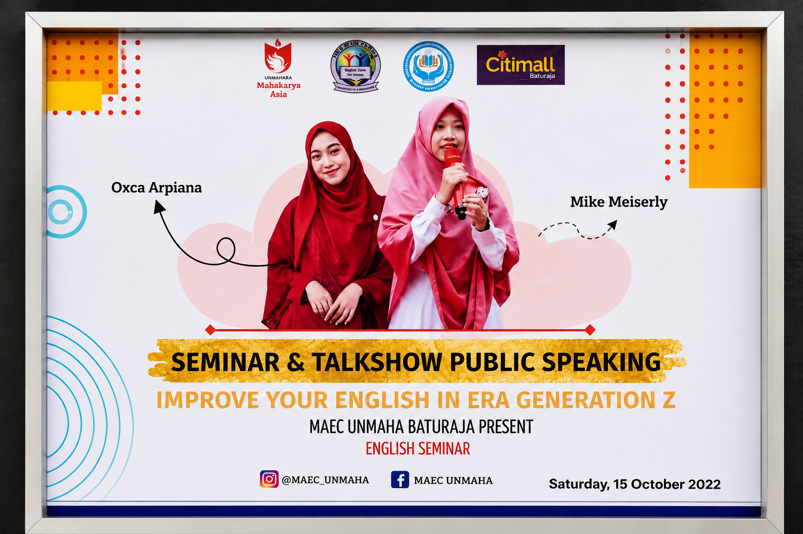
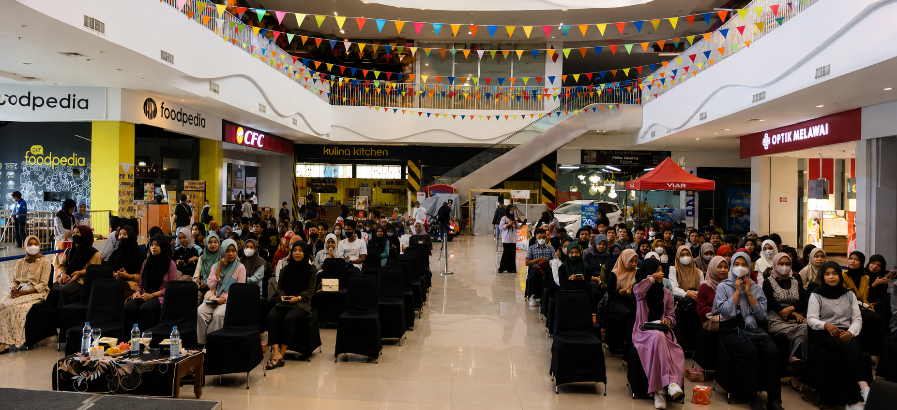
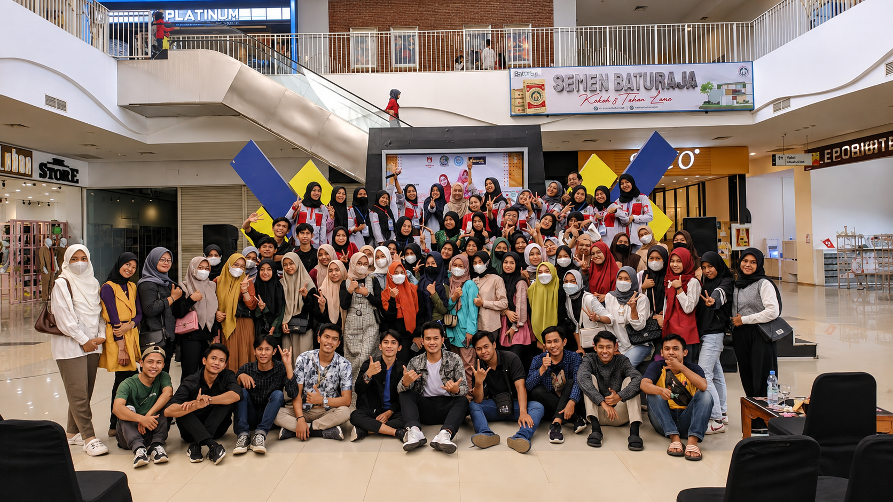

EXPERIENCES
Teaching has taken me to places I never expected — from classrooms to stages, workshops, competitions, and conversations with young people.
01 · SPEAKER
Speaking has always been one of the ways I connect with people. In October 2022, I had the opportunity to speak at a public speaking and English seminar held at Citimall Baturaja, organized by MAEC UNMAHA. The event brought together young people from Generation Z, creating a lively space for learning, sharing ideas, and building confidence.
Standing in front of a large audience reminded me that teaching does not always happen inside a classroom. Sometimes, it happens on a stage — through conversations, questions, and the courage to share what we know.
It was one of those moments that took me beyond the classroom and reminded me why I enjoy sharing ideas with young people.

The event that brought the story to life.

An afternoon of ideas, questions, and conversations.

A room full of young people, ideas, and shared energy.
02 · JUDGE
Being a judge in a storytelling competition taught me that evaluating others is also an opportunity to learn. Every participant brought a different perspective, voice, and way of telling a story.
03 · FACILITATOR
Through youth activities and workshops, I have learned that meaningful learning does not always require a perfect classroom. Sometimes, a conversation, a piece of paper, and the willingness to listen are enough.
04 · OTHER EXPERIENCES
From educational events to cross-cultural experiences, each opportunity has added another layer to my journey as a teacher, learner, and growing human being.